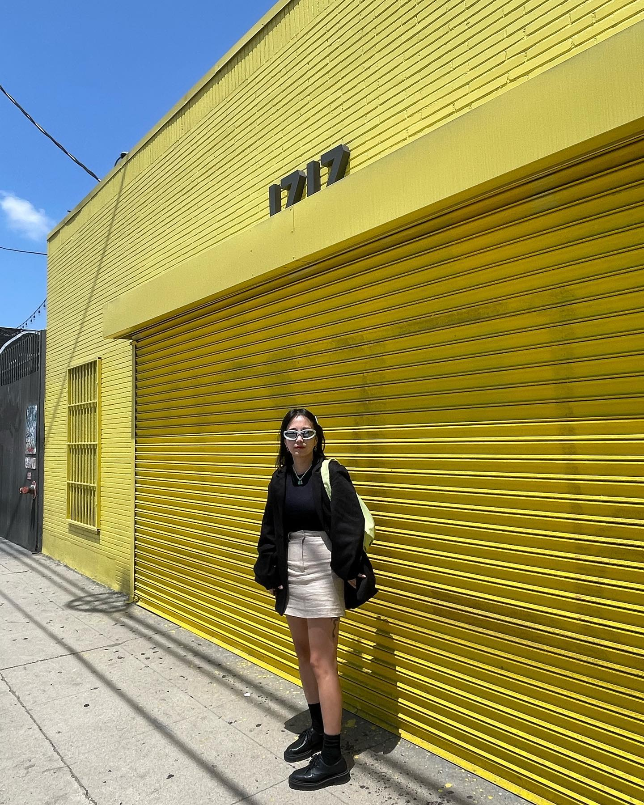

Hello
Welcome to my blog!Feel free to look around my learning progress.
About me
My name is Youn.
I moved to Auckland when I was 12, before that I lived in Seoul, Korea.
I briefly tried free coding course during lockdown (real brief like 2
hours), as my previous job I could not work remotely, so I just stayed
home mostly just sleeping and cooking (I enjoyed though). But I thought I
wanted to do something more, and just sitting in a comfort zone was not
me. So I already made a decision to leave my job during 2020 lockdown
where I worked for 6 years, and mid last year, decided to do a course at
Dev Academy where I can think about my future more and challenge myself.
I have lots of hobbies I can probably list like 30.. haha! I will share
few things, I love travelling, I have been to 19 countries, I am a huge
enthusiast for craft beer and coffee! Also I play in music bands. And I am
a foodie and I like cooking too.
Here is a picture of myself from the recent trip!
